Load packages
# numerical calculation & data frames
import numpy as np
import pandas as pd
# visualization
import matplotlib.pyplot as plt
import seaborn as sns
import seaborn.objects as so
# statistics
import statsmodels.api as smseaborn
# numerical calculation & data frames
import numpy as np
import pandas as pd
# visualization
import matplotlib.pyplot as plt
import seaborn as sns
import seaborn.objects as so
# statistics
import statsmodels.api as sm# pandas options
pd.options.display.float_format = '{:.2f}'.format # pd.reset_option('display.float_format')
pd.options.display.max_rows = 8
# Numpy options
np.set_printoptions(precision = 2, suppress=True)penguins = sns.load_dataset("penguins")
(
so.Plot(penguins, x="body_mass_g", y="species", color="island")
.facet(col="sex")
.add(so.Dot(), so.Jitter(0.5))
.scale(color="Set2") # color palettes: "Set2"
.layout(size=(8, 5)) # plot size
)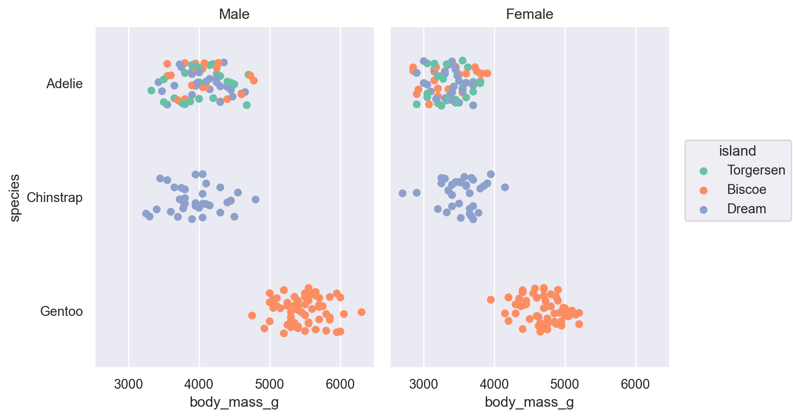
diamonds = sns.load_dataset("diamonds")
(
so.Plot(diamonds, x="carat", y="price", color="carat", marker="cut")
.add(so.Dots())
.scale(
color=so.Continuous("crest", norm=(0, 3), trans="sqrt"),
)
)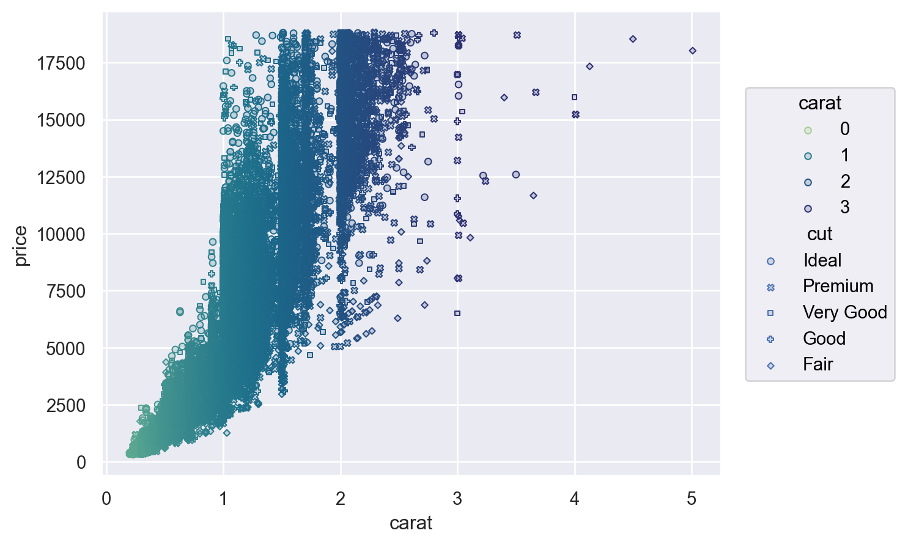
(
so.Plot(penguins, x="species")
.add(so.Bar(), so.Count())
.scale(x=so.Nominal(order=["Adelie", "Gentoo", "Chinstrap"])) # x축의 카테고리 순서를 변경
)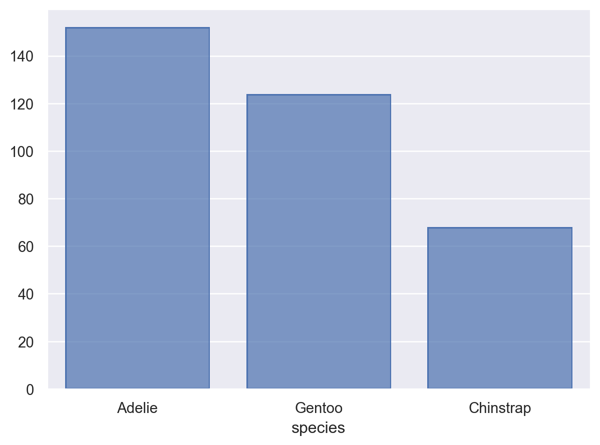
(
so.Plot(diamonds, x="carat", y="price", color="carat")
.add(so.Dots())
.scale(
x=so.Continuous().tick(every=0.5),
y=so.Continuous().label(like="${x:,.0f}"), # %표시: like="{x:.1f%}"
color=so.Continuous().tick(at=[1, 2, 3, 4]),
)
)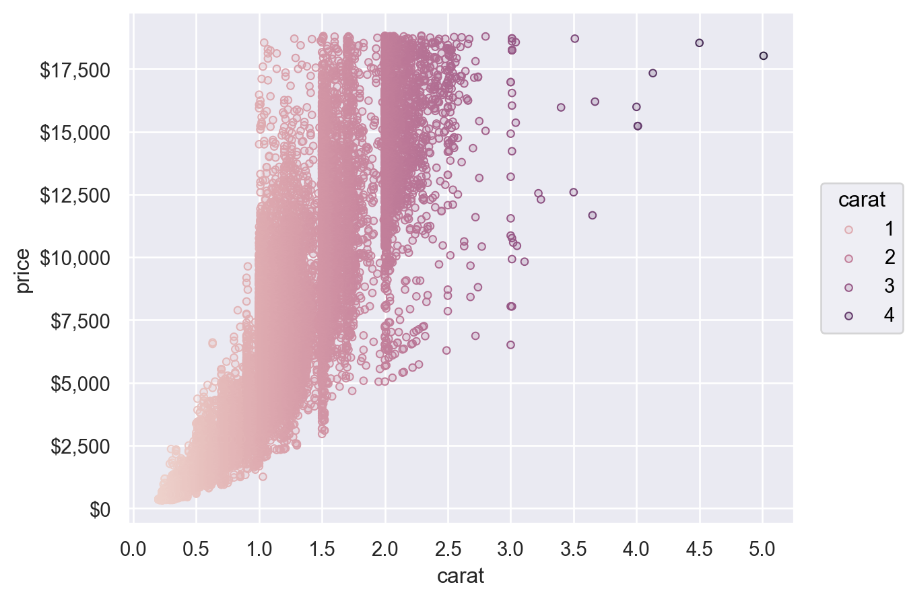
Plot has a number of methods for simple customization, including Plot.label(), Plot.limit(), and Plot.share():
penguins = sns.load_dataset("penguins")
(
so.Plot(penguins, x="body_mass_g", y="species", color="island")
.facet(col="sex")
.add(so.Dot(), so.Jitter(0.5))
.share(x=False)
.limit(y=(2.5, -0.5))
.label(
x="Body mass (g)",
y="",
color=str.capitalize,
title="{} penguins".format,
)
)
sns.axes_style()plt.style.library[]sns.axes_style()
# {'axes.facecolor': 'white',
# 'axes.edgecolor': 'black',
# 'axes.grid': False,
# 'axes.axisbelow': 'line',
# 'axes.labelcolor': 'black',
# 'figure.facecolor': 'white',
# 'grid.color': '#b0b0b0',
# 'grid.linestyle': '-',
# 'text.color': 'black',
# 'xtick.color': 'black',
# 'ytick.color': 'black',
# 'xtick.direction': 'out',
# 'ytick.direction': 'out',
# 'lines.solid_capstyle': <CapStyle.projecting: 'projecting'>,
# 'patch.edgecolor': 'black',
# 'patch.force_edgecolor': False,
# 'image.cmap': 'viridis',
# 'font.family': ['NanumGothic'],
# 'font.sans-serif': ['DejaVu Sans',
# 'Bitstream Vera Sans',
# 'Computer Modern Sans Serif',
# 'Lucida Grande',
# 'Verdana',
# 'Geneva',
# 'Lucid',
# 'Arial',
# 'Helvetica',
# 'Avant Garde',
# 'sans-serif'],
# 'xtick.bottom': True,
# 'xtick.top': False,
# 'ytick.left': True,
# 'ytick.right': False,
# 'axes.spines.left': True,
# 'axes.spines.bottom': True,
# 'axes.spines.right': True,
# 'axes.spines.top': True}plt.style.available
# ['Solarize_Light2',
# '_classic_test_patch',
# '_mpl-gallery',
# '_mpl-gallery-nogrid',
# 'bmh',
# 'classic',
# 'dark_background',
# 'fast',
# 'fivethirtyeight',
# 'ggplot',
# 'grayscale',
# 'seaborn-v0_8',
# 'seaborn-v0_8-bright',
# 'seaborn-v0_8-colorblind',
# 'seaborn-v0_8-dark',
# 'seaborn-v0_8-dark-palette',
# 'seaborn-v0_8-darkgrid',
# 'seaborn-v0_8-deep',
# 'seaborn-v0_8-muted',
# 'seaborn-v0_8-notebook',
# 'seaborn-v0_8-paper',
# 'seaborn-v0_8-pastel',
# 'seaborn-v0_8-poster',
# 'seaborn-v0_8-talk',
# 'seaborn-v0_8-ticks',
# 'seaborn-v0_8-white',
# 'seaborn-v0_8-whitegrid',
# 'tableau-colorblind10']tips = sns.load_dataset("tips")
p = so.Plot(tips, x="total_bill", y="tip", color="time").add(so.Dot())
p.theme(
{
"axes.facecolor": "white",
"axes.edgecolor": "0.8",
"axes.spines.top": False,
"axes.spines.right": False,
}
)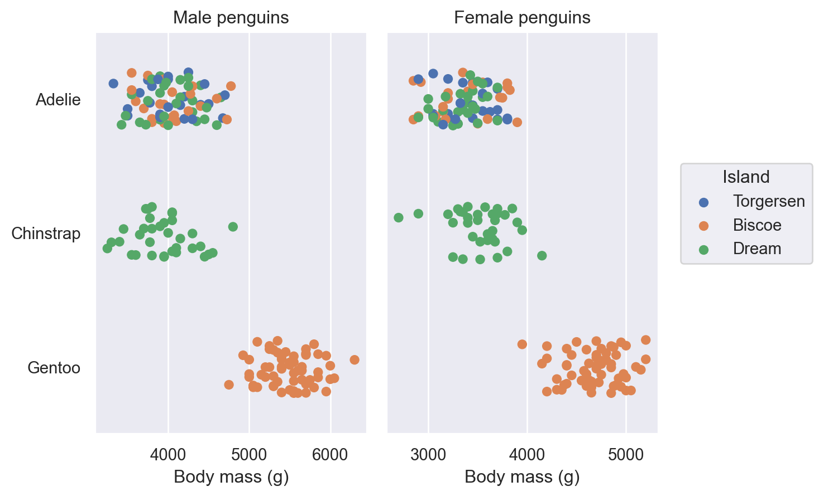
p.theme({**sns.axes_style("whitegrid"), "grid.linestyle": ":"})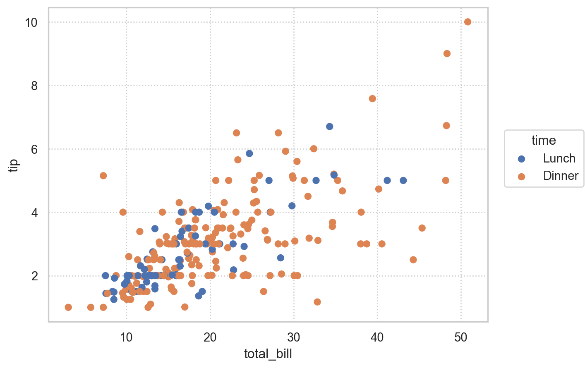
Seaborn: controlling figure aesthetics
# Matplotlib의 스타일을 사용: 제한적
p.theme({**plt.style.library["fivethirtyeight"]})플랏 단위가 아닌 전체 플랏에 대해 적용하려면,
Plot.config.theme.update()을 사용
theme_dict = {**sns.axes_style("whitegrid"), "grid.linestyle": ":"}
so.Plot.config.theme.update(theme_dict)p.theme({"font.family": ["AppleGothic"]})so.Plot.config.theme.update({"font.family": ["AppleGothic"]})# matplotlib에 설치된 폰트 확인
import matplotlib.font_manager as fm
# 폰트 위치/이름 확인
fm.fontManager.ttflist
# 폰트 이름만 추출
sorted([f.name for f in fm.fontManager.ttflist])
# 폰트 이름 중 'Nanum'이 들어간 폰트 확인
[f.name for f in fm.fontManager.ttflist if "Nanum" in f.name]import matplotlib.font_manager as fm
import matplotlib.pyplot as plt
# List에 없는 폰트를 추가하는 방법
font_entry = fm.FontEntry(
fname="/Users/skcho/Library/Fonts/NanumGothic.ttf", # 폰트 저장 경로
name="NanumGothic", # 폰트 이름 설정
)
fm.fontManager.ttflist.insert(0, font_entry) # Matplotlib에 폰트 추가
plt.rcParams.update(
{"font.family": "NanumGothic", "axes.unicode_minus": False}
) # 폰트 설정
# 폰트 이름 중 'Nanum'이 들어간 폰트 확인
[f.name for f in fm.fontManager.ttflist if "Nanum" in f.name]tips = sns.load_dataset("tips")
tips["day"] = tips["day"].map({"Sun": "일요일", "Sat": "토요일", "Thur": "목요일", "Fri": "금요일"})
p = so.Plot(tips, x="day", y="tip").add(so.Dots()).label(title="요일별 받은 팁 금액", y="팁 금액")
# 플랏 별로 한글 폰트 설정
p.theme({"font.family": ["AppleGothic"]}) # Windows: "Malgun Gothic"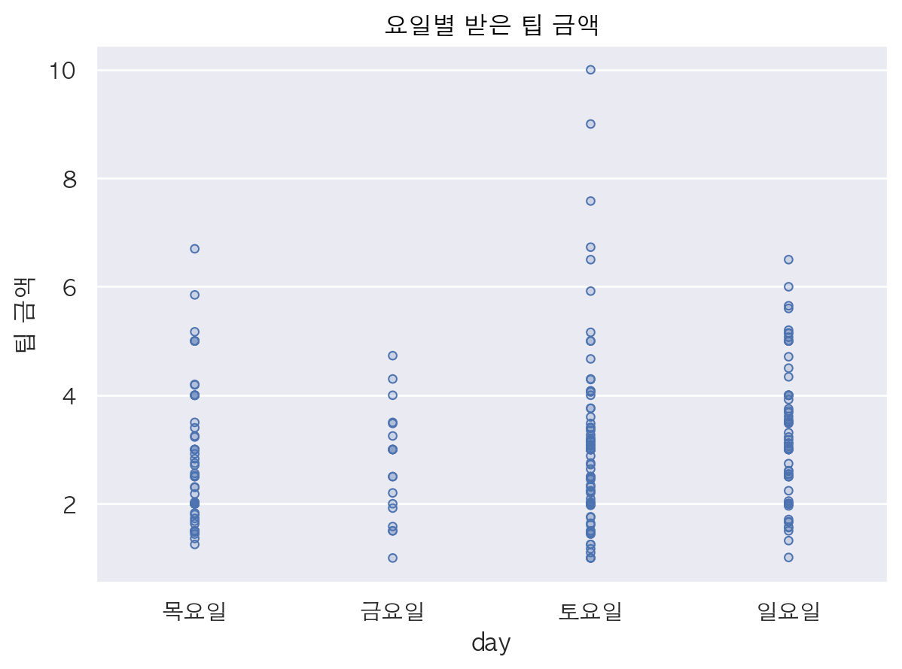
# 또는 전체에 적용하려면,
so.Plot.config.theme.update({"font.family": ["AppleGothic"]})sys module을 이용하여 sbcustom.py가 있는 폴더를 sys.path에 추가import sys
sys.path.append('absolute path to sbcustom.py')sbcustom.py
"""
Seaborn.objects statistical plotting custom functions.
boxplot, rangeplot
"""
import seaborn as sns
import seaborn.objects as so
def boxplot(df, x, y, color=None, alpha=0.1, marker="<"):
return (
so.Plot(df, x=x, y=y, color=color)
.add(so.Dots(alpha=alpha, color=".6"), so.Jitter(), so.Dodge())
.add(so.Range(), so.Est(errorbar=("pi", 50)), so.Dodge())
.add(so.Dot(pointsize=8, marker=marker), so.Agg("median"), so.Dodge())
.scale(color="Dark2")
.theme({**sns.axes_style("whitegrid")})
)
def rangeplot(df, x, y, color=None, alpha=0.1, marker="<"):
return (
so.Plot(df, x=x, y=y, color=color)
.add(so.Range(), so.Est(errorbar=("pi", 50)), so.Dodge())
.add(so.Dots(pointsize=8, marker=marker), so.Agg("median"), so.Dodge())
.scale(color="Dark2")
.theme({**sns.axes_style("whitegrid")})
)from sbcustom import boxplot, rangeplot
rangeplot(penguins, x="species", y="body_mass_g")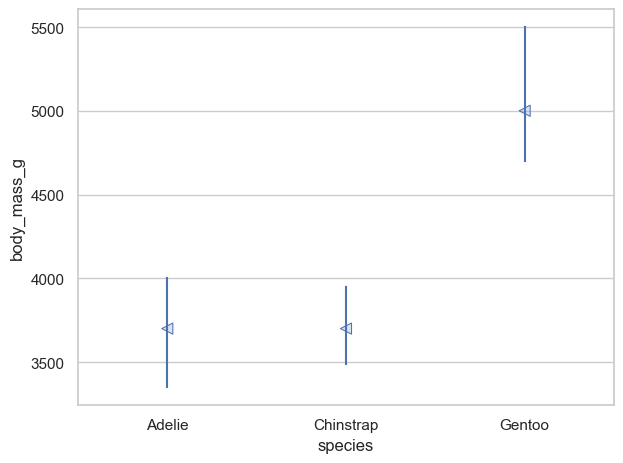
boxplot(penguins, x="species", y="body_mass_g", color="island")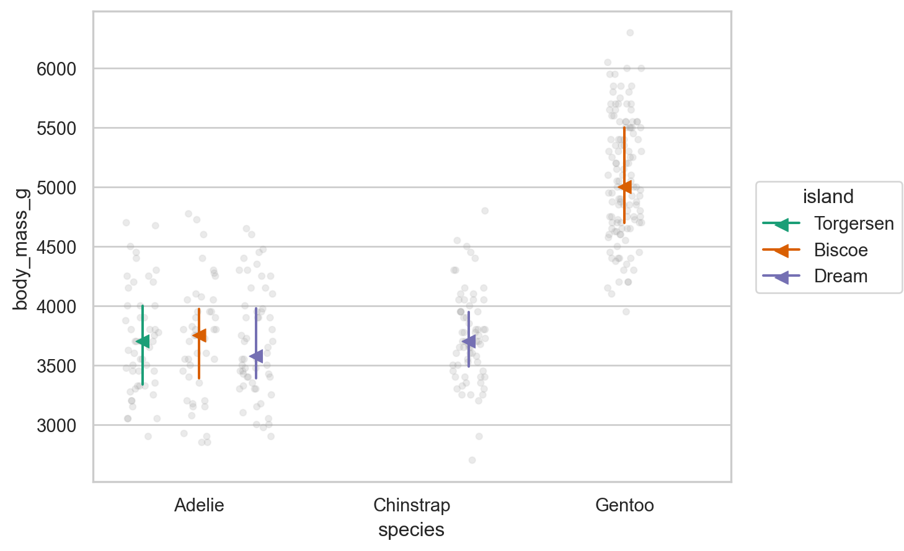
Snippets: Configure User Snippets
"seaborn.obj": {
"prefix": "sbj",
"body": [
"(",
"\tso.Plot($1, x='$2', y='$3')",
"\t.add($0)",
")",
],
"description": "plot seaborn.objects"
},display()
.show() (pyplot으로 변환)
p1 = rangeplot(penguins, x="species", y="body_mass_g")
p2 = boxplot(penguins, x="species", y="body_mass_g", color="island")
display(p1, p2) # jupyter의 output; print()와 같은 역할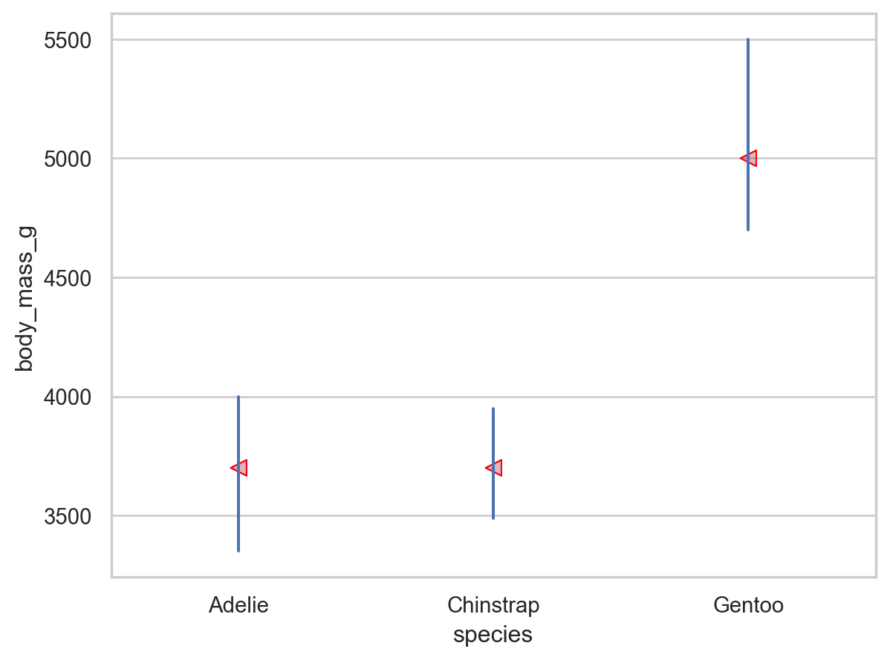
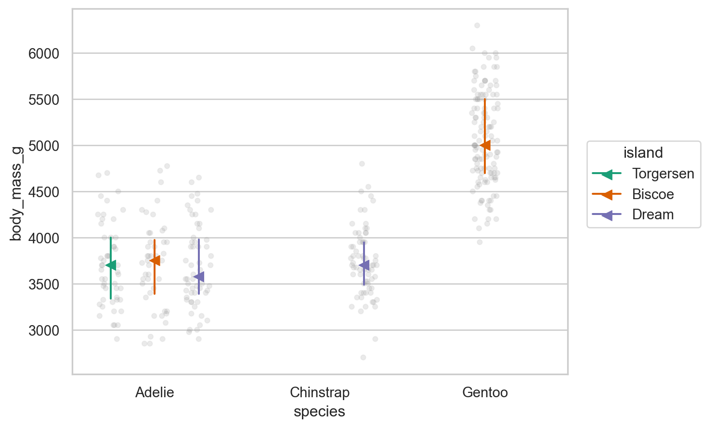
p1.show(); p2.show()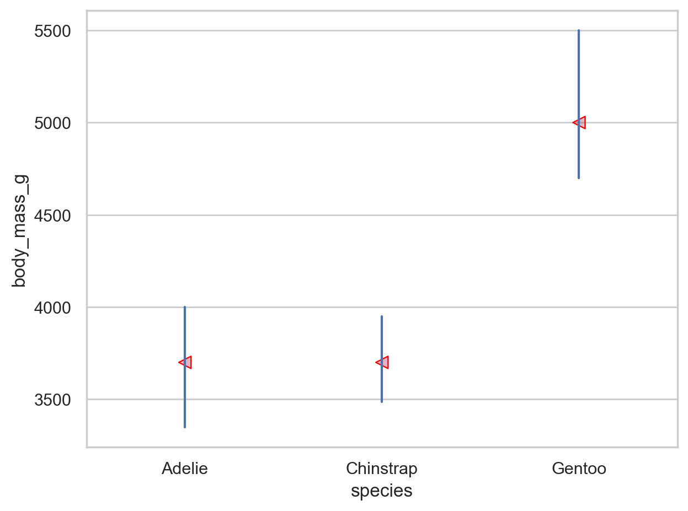
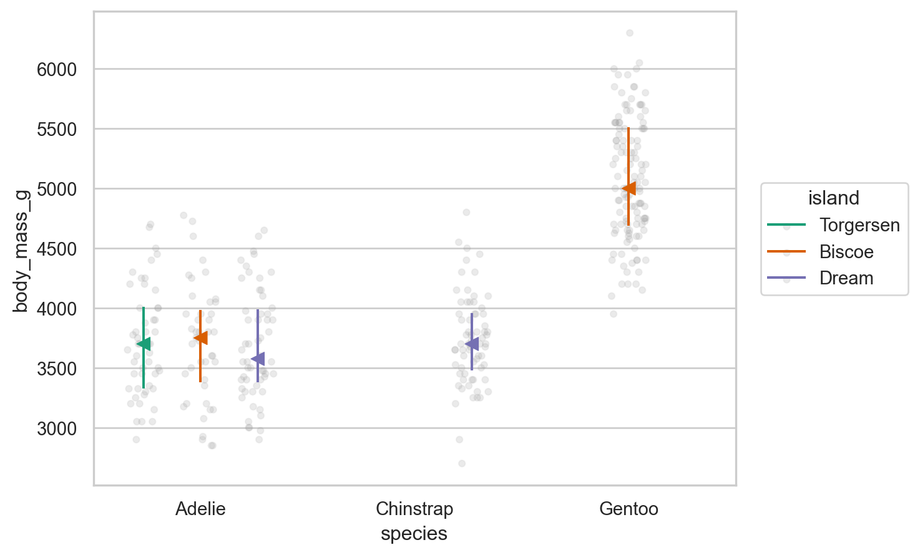